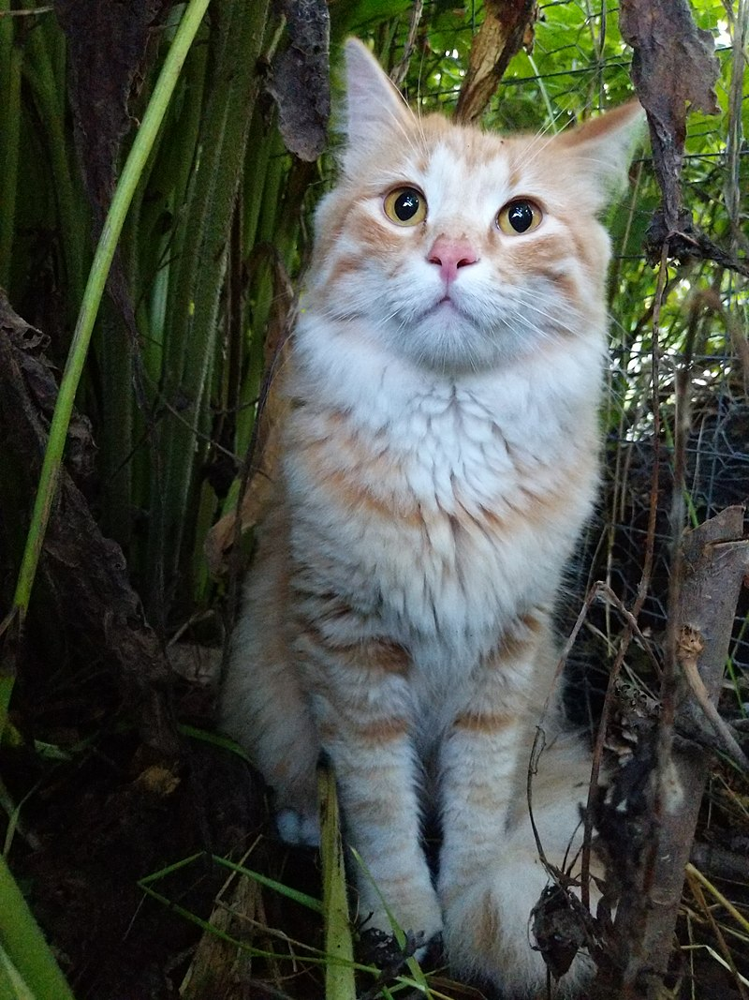

The cat (Felis catus) is a domestic species of small carnivorous mammal. It is the only domesticated species in the family Felidae and is often referred to as the domestic cat to distinguish it from the wild members of the family. A cat can either be a house cat, a farm cat or a feral cat; the latter ranges freely and avoids human contact. Domestic cats are valued by humans for companionship and their ability to hunt rodents. About 60 cat breeds are recognized by various cat registries.
The cat is similar in anatomy to the other felid species: it has a strong flexible body, quick reflexes, sharp teeth and retractable claws adapted to killing small prey. Its night vision and sense of smell are well developed. Cat communication includes vocalizations like meowing, purring, trilling, hissing, growling and grunting as well as cat-specific body language. It is a solitary hunter but a social species. It can hear sounds too faint or too high in frequency for human ears, such as those made by mice and other small mammals. It is a predator that is most active at dawn and dusk. It secretes and perceives pheromones.
Female domestic cats can have kittens from spring to late autumn, with litter sizes often ranging from two to five kittens. Domestic cats are bred and shown at events as registered pedigreed cats, a hobby known as cat fancy. Failure to control breeding of pet cats by spaying and neutering, as well as abandonment of pets, resulted in large numbers of feral cats worldwide, contributing to the extinction of entire bird, mammal, and reptile species, and evoking population control.
Cats were first domesticated in the Near East around 7500 BCE. It was long thought that cat domestication was initiated in ancient Egypt, as since around 3100 BCE veneration was given to cats in ancient Egypt. As of 2017, the domestic cat was the second-most popular pet in the United States, with 95 million cats owned. In the United Kingdom, around 7.3 million cats lived in more than 4.8 million households as of 2019.